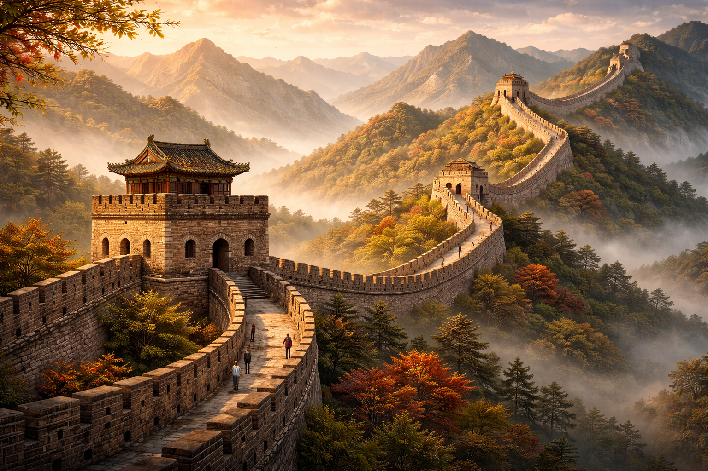

Um pouco sobre
A história da China é uma das mais antigas e contínuas do mundo, com registros que remontam a milhares de anos. Ao longo desse período, o país foi governado por diversas dinastias que contribuíram para a formação de sua identidade cultural, política e social. Cada dinastia trouxe avanços importantes, como o desenvolvimento da escrita, da agricultura e de grandes obras de engenharia. Além disso, a China foi responsável por importantes invenções que impactaram o mundo, como o papel, a pólvora e a bússola. A evolução histórica do país foi marcada por períodos de prosperidade e também por momentos de conflito e transformação. Essa longa trajetória contribuiu para a construção de uma civilização rica e influente, que permanece relevante até os dias atuais.
Dinastias e impérios
As dinastias desempenharam um papel fundamental na organização da China ao longo da história. Entre as mais importantes, destacam-se as dinastias Qin, Han, Tang e Ming, cada uma responsável por avanços significativos na administração, cultura e expansão territorial. A dinastia Qin, por exemplo, unificou o país e iniciou a construção da Grande Muralha. Já a dinastia Han consolidou o desenvolvimento cultural e econômico, enquanto a dinastia Tang foi marcada por grande florescimento artístico e comercial. A dinastia Ming, por sua vez, ficou conhecida pela construção de importantes obras arquitetônicas. Esses períodos ajudaram a moldar a estrutura do Estado chinês e sua influência ao longo dos séculos.
Transformações históricas
Ao longo do tempo, a China passou por diversas transformações que alteraram profundamente sua estrutura política e social. A queda do sistema imperial no início do século XX marcou o fim de uma era e o início de um novo período de mudanças. Esse processo incluiu conflitos internos e influências externas que impactaram o desenvolvimento do país. Posteriormente, a criação da República Popular da China, em 1949, representou uma nova fase na história nacional, com mudanças significativas na organização política e econômica. Desde então, o país tem passado por um processo contínuo de modernização e crescimento, consolidando-se como uma das principais potências mundiais.
China contemporânea
A China contemporânea é resultado de um longo processo histórico que combina tradição e modernidade. Nas últimas décadas, o país passou por um rápido desenvolvimento econômico, tornando-se um dos principais atores do cenário global. O crescimento das cidades, a expansão industrial e o avanço tecnológico são características marcantes desse período. Ao mesmo tempo, elementos da cultura tradicional continuam presentes na sociedade, evidenciando a forte ligação com o passado. A China atual reflete essa dualidade, unindo sua herança histórica com a busca por inovação e progresso. Esse equilíbrio entre antigo e moderno é um dos aspectos mais marcantes de sua identidade.